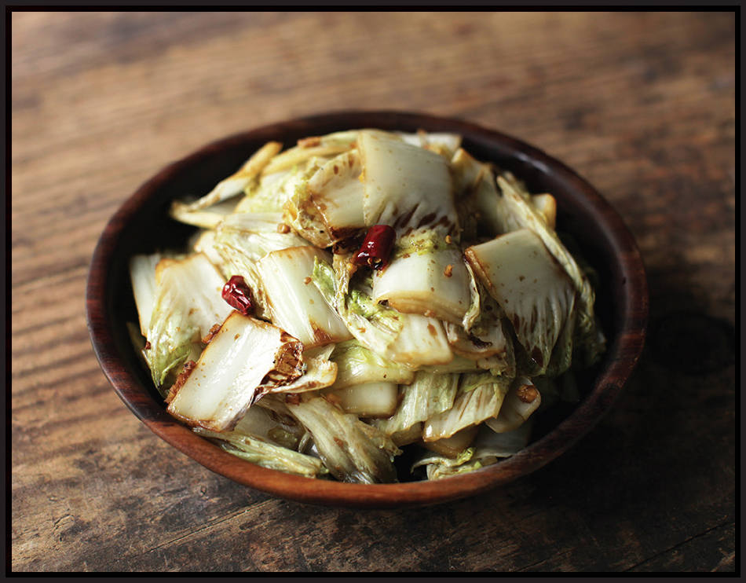

Stir-Fried Greens Technique 2: With Chiles and Vinegar
What it works best with: Pale green and crunchy greens (such as Napa or white cabbage or romaine or iceberg lettuce)
STIR-FRIED NAPA CABBAGE WITH VINEGAR AND CHILES
|
Yield Serves 4 |
Active Time 10 minutes Total Time 10 minutes |
For the best results, separate the tender tips of the cabbage leaves from the heartier bottoms. Start the stir-fry with just the bottoms and let them cook for 15 to 30 seconds before adding the tops so that everything finishes cooking at the same time.
INGREDIENTS
For the Sauce:
1 teaspoon (4 g) sugar
2 tablespoons (30 ml) black, Chinkiang, or balsamic vinegar
1 tablespoon (15 ml) light soy sauce
For the Stir-Fry:
2 tablespoons (30 ml) peanut, rice bran, or other neutral oil
3 medium garlic cloves (8 g), minced
2 small dried hot chiles (such as árbol or Japones), stems removed, snipped into ½-inch pieces with kitchen shears (squeeze out and discard the seeds if you want it less spicy)
1 small head Napa cabbage (about 1 pound/450 g), cored, leaves cut into 1½- to 2-inch squares
Kosher salt
If you’re anything like me, you’ll occasionally find yourself with three-quarters of a head of iceberg lettuce left over after you had to buy a whole head to shred just a bit of for burger night or hard-shell taco night. What can you do with the rest of that head of lettuce? Why, stir-fry it of course. Even lettuce that is slightly past its prime and starting to soften a bit is wonderful when stir-fried. Greens with vinegar and dried chiles is a classic Sichuan preparation you’ll most frequently see with Napa cabbage, but it works well with any pale green crisp greens (including that hamburger iceberg).
DIRECTIONS
1For the Sauce: Combine sugar, vinegar, and soy sauce in a small bowl and set aside.
2For the Stir-Fry: Heat a wok over high heat until lightly smoking. Add the oil and swirl to coat. Add the garlic and dried chiles and stir-fry until aromatic, about 10 seconds. Immediately add the cabbage and stir-fry until the cabbage is starting to wilt but still quite crisp, 1 to 2 minutes. Swirl the sauce in around the edges of the wok and stir-fry until the sauce is almost dry and the greens are tender-crisp, about 1 minute longer. Season with salt to taste, transfer to a serving platter, and serve immediately.